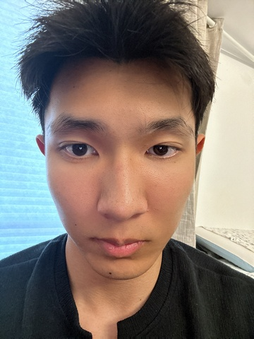

基本信息
备注
此人说“不想申请内联部，因为能在内联部学到的技能对我没有用”。被问及为什么想要申请秘书部的时候，此人回答“秘书部能学到一些技能，对我以后申请实习之类的有用，但是又不如外联部有用，所以我第一志愿要申请外联部”（大意是这样）加入CSSA动机令人困惑
1-page Resume (Encouraged，PDF格式，中英文均可)
Portfolio or Additional Files (Optional，PDF或视频)
请把文件名命为：first name_Last name_netid
请上传一张自己的照片，普通的生活照就可以！（只是为了面试的时候我们可以把你认出来）

查看原图
查看原图
通用问题部分
为什么想要加入CSSA？
我觉得CSSA是特别暖心和独特的存在。我和康奈尔最早的一个经历就是CSSA举办的新生见面会，当时我就已经被CSSA深深的吸引了。在晚宴时，我有机会在一个更非正式的场景下接触到了各个学长学姐！我觉得他们都很友好，然后愿意帮助我们新生。同时我发现大家之间的关系都非常友爱和互帮互助，所以我也希望能加入大家
你心目中CSSA是个什么样的组织？
我觉得CSSA不单单是一个学校里面的Club，因为他有一个很长的历史，经过历代会长的带领，现在CSSA已经成为了康奈尔留学生的一个引路人。CSSA不是一个冷冰冰的机构，更像是一群热心的学长学姐，在你需要时总能帮一把，还把中国人内心的连接带到了异国他乡，给每个中国留学生一个家。
加入CSSA之后，你最想在康奈尔校园内实现的事情是什么？
再加入CSSA后我希望能竭尽所能来帮助CSSA完成CSSA的目标，给所有在康奈尔的留学生提供帮助并且让大家在异国他乡的生活体验变得更好。我希望能加入外联部，然后我觉得我想实现的一个目标就是能让CSSA别的部门的人有足够的资金来策划他们所想要举办的活动。
外联部
之前是否有谈赞助/谈判经验？若无，请填“无”；
若有，请稍作描述。
和教练谈关于recruitment的事项，并且策划公益活动。
第一志愿为什么选择这个部门？
我觉得外联部是一个非常适合我的部门，同时也是一个我很有热情的一个部门。我因为很喜欢和人打交道，然后也有类似的经历，比如和教练联系关于推销自己，让教练给我recruitment offer，所以我觉得我和外联部很适配。既有对拉赞助和谈合作的passion，也有这方面的经验。
秘书处
如果让你选择一周的工作，你想做什么？
写一封让新生感到温暖的欢迎邮件
当别人第一次见到你时，他们会说“哇，你居然___！”（请填空）
气质这么独特
某天深夜，一位新生在微信上非常焦急地询问：‘我的航班延误了了，接机联系不上怎么办？现在半夜一个人在机场好害怕...’
作为小助手值班的你，会如何回复？请写出具体回应（注意：你无法直接解决问题，但需要让TA感到安心）。
别担心，深夜一个人确实会不安，但你能一个人这样飞美国已经很棒了！你可以再试着拨打接机通知里的电话，如果还是联系不上，可以先在机场休息区坐一下，安全第一。我这边也会帮你联系联系。你留意消息，有进展随时告诉我，陪你一起等。🌙
你希望从秘书处的伙伴们和这份工作中获得什么？（比如：深厚的友谊？一份完美的简历？超硬核的技能？还是单纯的快乐？）
我渴望在真实的事情中打磨自己的沟通协调、应急处理和项目统筹能力，并且收获友谊和快乐。
(可选) 秘书处传统：每次团建都要尝试一个奇奇怪怪的新活动。你有什么离谱但有趣的idea吗？（多奇怪都行）
大家穿正装出席的活动，我们穿睡衣出席
第二志愿为什么选择这个部门？
我希望成为连接各方、保障顺畅运行的枢纽。享受在幕后通过细致协调与服务支持大家、成就活动，这带给我巨大的满足感。同时，这也是一份能让我成长的经历，锤炼综合能力，和及时的应变能力。我希望能成为那个让美好顺利发生的人。
是否接受部门调剂？
是